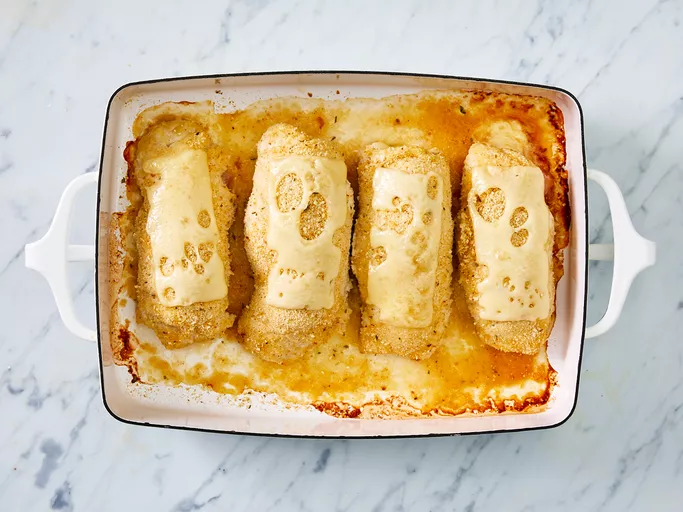

Chicken Cordon Blue

The Plate
This entree is easy and delicious! It's everyone's favorite! Try to use the largest chicken breasts you can find so you'll be able to roll the easier.
Ingredients
- nonstick cooking spray
- 4 skinless, boneless chicken breast halves
- 1/4 tablespoons salt
- 1/8 tablespoons ground black pepper
- 6 slices Swiss cheese
- 4 slices cooked ham
- 1/2 cup seasoned bread crumbs
Steps
- Gather all ingredients. Preheat oven to 350 degrees F. Coat a 7x11-inch baking dish with nonstick cooking spray.
- Pound chicken breasts to 1/4 inch thickness.
- Sprinkle each piece of chicken on both sides with salt and pepper. Place 1 Swiss cheese slice and 1 ham slice on top of each breast.
- Roll up each breast and secure with toothpicks.
- Place in the prepared baking dish and Sprinkle chicken evenly with bread crumbs.
- Bake in the preheated oven until chicken is no longer pink, 30 to 35 minutes.
- Remove from oven, and place 1/2 Swiss cheese slice on top of each breast.
- Return to oven until cheese ahs melted, 3 to 5 minutes. Remove toothpicks and serve immediately.
Chicken Cordon Blue
4.6 stars (2,718)